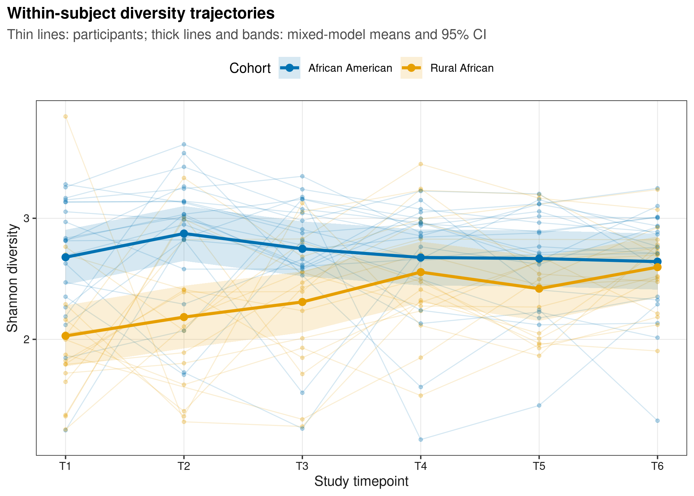
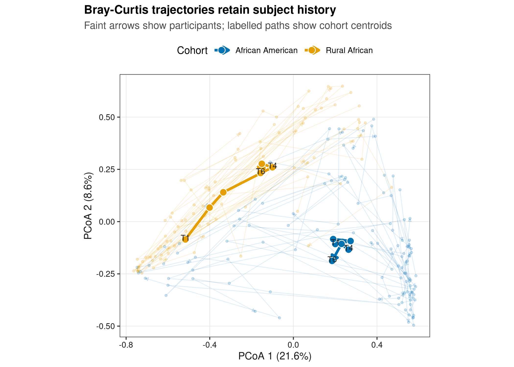
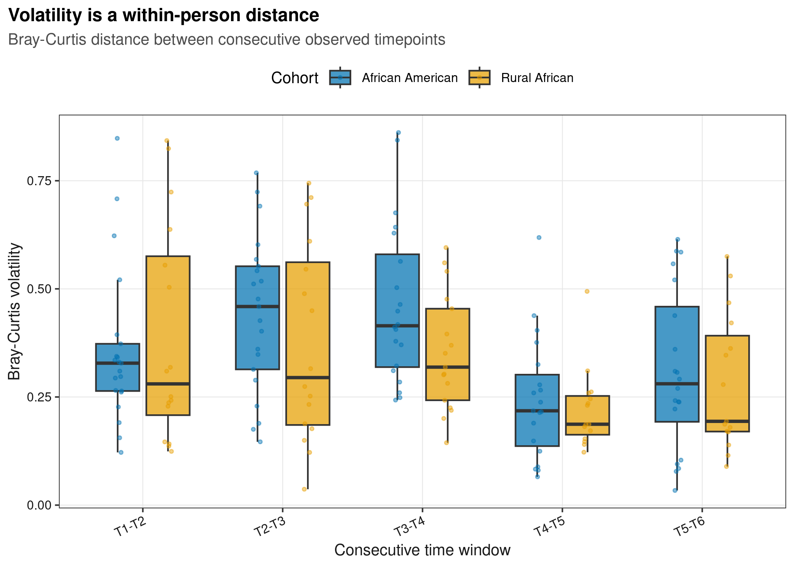
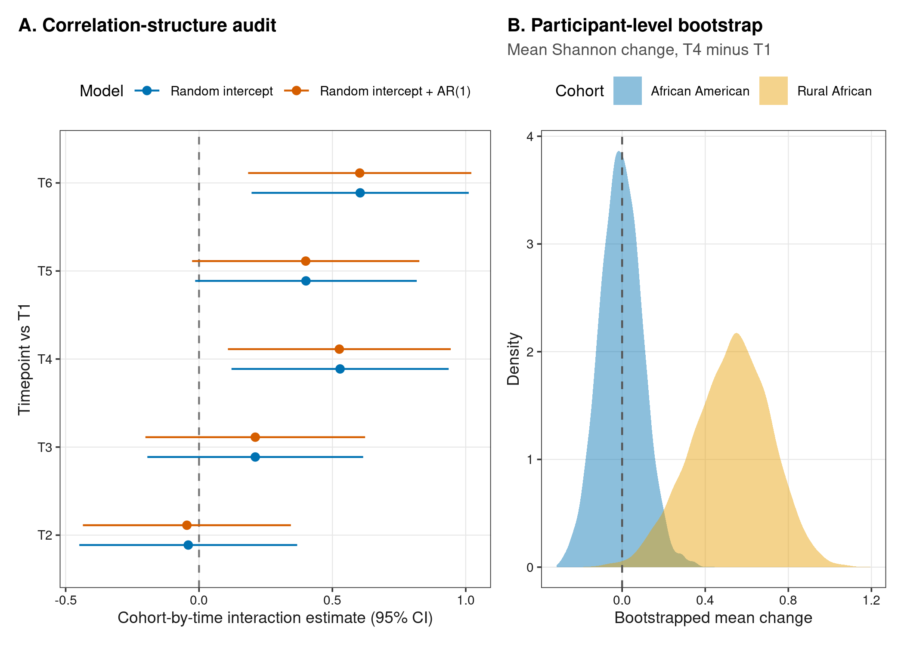

options(timeout = 600)
data_url <- "https://raw.githubusercontent.com/petemeng/microbiome-best-practices/3cb6a817e0c73ab7ecbec1cedc1ad80cbb9ecfaa/"
input_files <- c(
"data/small/longitudinal-dietswap/metadata.tsv",
"data/small/longitudinal-dietswap/otutab.tsv",
"data/small/longitudinal-dietswap/source-summary.json",
"data/small/longitudinal-dietswap/taxonomy.tsv"
)
for (path in input_files) {
dir.create(dirname(path), recursive = TRUE, showWarnings = FALSE)
if (!file.exists(path)) download.file(paste0(data_url, path), path, mode = "wb", quiet = TRUE)
}纵向：线性混合模型/轨迹/volatility
纵向分析的独立单位是受试者，不是时间点
纵向微生物组论文常把同一位参与者的多个样本连成线，并叠加组平均轨迹；若研究整体群落变化，还会画 PCoA 箭头或报告相邻时间点距离。它们共同回答：
群落指标是否随时间改变？两组的改变模式是否不同？一次改变发生在个体内，还是主要来自个体间差异？
本例使用 O’Keefe 等人的两周饮食互换研究：非裔美国人与南非农村参与者在基线饮食与互换饮食阶段被重复采样。原研究结合微生物、代谢物和黏膜标志物评估饮食改变；公开的 dietswap 对象提供 222 个 HITChip 16S 系统发育芯片丰度谱。原始论文、Dryad 数据记录和Bioconductor 数据包给出了可引用来源。
HITChip 不是扩增子测序；它的丰度预处理不能照搬到 ASV 表，但“特征×样本 → 样本内指标 → 重复测量模型”的下游逻辑相同。
重要纵向连线不等于纵向检验
把同一个体的点连起来只是一种展示。推断必须在模型中声明同一个体内的相关性；把 222 个样本当作 222 个独立观察，会低估标准误并制造过度显著。
下载并读取本次分析的数据
需要 R，以及 emmeans、ggplot2、nlme、patchwork、ragg、svglite、vegan。本次使用饮食互换研究的 HITChip 丰度、分类和样本信息表；它们不是扩增子计数，模型需保留受试者和时间点。
在一个新建的文件夹中运行以下代码，下载文件后按文中的顺序继续分析：
.libPaths(c(".r-lib", .libPaths()))
library(nlme)
library(emmeans)
library(vegan)
library(ggplot2)
library(patchwork)
set.seed(20260751)
font_pub <- "sans"
pal_pub <- c(
blue = "#0072B2", orange = "#E69F00", green = "#009E73",
vermillion = "#D55E00", purple = "#CC79A7", sky = "#56B4E9",
yellow = "#F0E442", grey = "#6B7280"
)
scale_color_pub <- function(..., values = unname(pal_pub)) {
ggplot2::scale_color_manual(..., values = values)
}
scale_fill_pub <- function(..., values = unname(pal_pub)) {
ggplot2::scale_fill_manual(..., values = values)
}
theme_pub <- function(base_size = 10, base_family = font_pub) {
ggplot2::theme_bw(base_size = base_size, base_family = base_family) +
ggplot2::theme(
panel.grid.minor = ggplot2::element_blank(),
panel.grid.major = ggplot2::element_line(colour = "#E6E6E6", linewidth = 0.25),
axis.text = ggplot2::element_text(colour = "#1A1A1A"),
axis.title = ggplot2::element_text(colour = "#1A1A1A"),
plot.title.position = "plot",
plot.title = ggplot2::element_text(face = "bold", size = ggplot2::rel(1.15)),
plot.subtitle = ggplot2::element_text(colour = "#4D4D4D"),
legend.position = "top",
legend.key = ggplot2::element_blank()
)
}
save_pub <- function(plot, file_base, width = 180, height = 125,
units = "mm", dpi = 600) {
dir.create(dirname(file_base), recursive = TRUE, showWarnings = FALSE)
ggplot2::ggsave(paste0(file_base, ".pdf"), plot, width = width,
height = height, units = units,
device = grDevices::cairo_pdf, family = font_pub, bg = "white")
ggplot2::ggsave(paste0(file_base, ".svg"), plot, width = width,
height = height, units = units, device = svglite::svglite,
bg = "white")
ggplot2::ggsave(paste0(file_base, ".png"), plot, width = width,
height = height, units = units, dpi = dpi,
device = ragg::agg_png, bg = "white")
ggplot2::ggsave(paste0(file_base, ".tiff"), plot, width = width,
height = height, units = units, dpi = dpi,
device = ragg::agg_tiff, compression = "lzw", bg = "white")
invisible(plot)
}读取三件套并核对重复测量结构
base <- "data/small/longitudinal-dietswap"
otutab <- as.matrix(read.delim(
file.path(base, "otutab.tsv"), row.names = 1, check.names = FALSE
))
taxonomy <- read.delim(
file.path(base, "taxonomy.tsv"), row.names = 1, check.names = FALSE
)
metadata <- read.delim(
file.path(base, "metadata.tsv"), row.names = 1, check.names = FALSE
)
storage.mode(otutab) <- "numeric"
stopifnot(
identical(rownames(otutab), rownames(taxonomy)),
identical(colnames(otutab), rownames(metadata)),
all(otutab >= 0), all(colSums(otutab) > 0),
!anyDuplicated(paste(metadata$SubjectID, metadata$Timepoint))
)
dim(otutab)
head(taxonomy[, c("Phylum", "Family", "Genus", "DisplayName")])
head(metadata)
with(metadata, table(Cohort, Timepoint))[1] 130 222
Phylum Family Genus
HT_001 Actinobacteria Actinobacteria Actinomycetaceae
HT_002 Firmicutes Bacilli Aerococcus
HT_003 Proteobacteria Proteobacteria Aeromonas
HT_004 Verrucomicrobia Verrucomicrobia Akkermansia
HT_005 Proteobacteria Proteobacteria Alcaligenes faecalis et rel.
HT_006 Bacteroidetes Bacteroidetes Allistipes et rel.
DisplayName
HT_001 Actinomycetaceae
HT_002 Aerococcus
HT_003 Aeromonas
HT_004 Akkermansia
HT_005 Alcaligenes faecalis et rel.
HT_006 Allistipes et rel.
SubjectID Sex Cohort OriginalCohortCode PhaseCode
Sample-1 byn Male African American AAM DI
Sample-2 nms Male Rural African AFR HE
Sample-3 olt Male Rural African AFR HE
Sample-4 pku Female Rural African AFR HE
Sample-5 qjy Female Rural African AFR HE
Sample-6 riv Female Rural African AFR HE
Timepoint TimeWithinPhase BMIGroup
Sample-1 4 1 Obese
Sample-2 2 1 Lean
Sample-3 2 1 Overweight
Sample-4 2 1 Obese
Sample-5 2 1 Overweight
Sample-6 2 1 Obese
Timepoint
Cohort 1 2 3 4 5 6
African American 21 21 21 20 20 20
Rural African 17 16 17 17 15 17先把每个样本转为相对丰度并计算 Shannon。组名在进入图片前统一成英文。
relative <- sweep(otutab, 2, colSums(otutab), "/")
metadata$Shannon <- -colSums(ifelse(
relative > 0, relative * log(relative), 0
))[rownames(metadata)]
metadata$Cohort <- factor(
metadata$Cohort,
levels = c("African American", "Rural African")
)
metadata$TimeFactor <- factor(metadata$Timepoint, levels = 1:6)
metadata$TimeLabel <- factor(
paste0("T", metadata$Timepoint), levels = paste0("T", 1:6)
)下载完整 R 脚本。脚本包含数据下载、计算和图形导出。
首次使用时安装 R 包
install.packages(c(
"nlme", "emmeans", "vegan", "ggplot2", "patchwork",
"scales", "digest", "svglite", "ragg"
))
if (!requireNamespace("BiocManager", quietly = TRUE)) {
install.packages("BiocManager")
}
BiocManager::install(c("phyloseq", "microbiome"))为什么普通线性模型不够
对第 (i) 位参与者在时间 (t) 的 Shannon 多样性，可写成：
[ y_{it}=_0+_1_i+_2_t+ _3(_it)+b_i+{it}, ]
其中 (b_i) 是个体随机截距，吸收稳定的个体间差异。Cohort × Time 交互项检验的是“两组随时间的改变是否不同”，不是某一组单独是否显著。
先记住四点：
- 时间先按因子建模。 只有六个预设时间点时，因子模型不强迫轨迹为直线，也便于定位差异发生在哪个阶段。
- 个体是随机效应或置换区组。 重复测量的独立单位是参与者，不是粪便样本。
- AR(1) 是候选结构，不是默认真理。 相邻时间点残差可能更相似，但样本少、缺失不规则时，额外参数未必改善模型。
- volatility 是个体内距离。 本例定义为同一参与者相邻观测之间的 Bray–Curtis 距离；值越大表示该时间窗群落改变越大。
深入：随机截距、随机斜率和 AR(1) 分别解决什么
- 随机截距允许每位参与者有不同基线；
- 随机斜率允许每位参与者有不同时间趋势，但需要足够个体和时间点；
- AR(1) 描述同一个体残差随时间间隔衰减的相关性。
三者不是互相替代。复杂模型应由设计和诊断支持，不能只因 AIC 略降就无限加参数。若时间间隔不等，连续时间相关结构 corCAR1 往往比离散 corAR1 更合适；若结局是计数或比例，则需匹配分布的广义混合模型。
注记缺失时间点可以保留，但需说明缺失机制
混合模型不要求每个人都有全部六个时间点。本例 222 个样本来自 38 人，理论满格为 228 个观测。模型在“给定已纳入协变量后缺失近似随机”的假设下使用可用观测；若失访与症状恶化有关，应做缺失机制与敏感性分析。
用个体内模型比较时间变化
拟合随机截距主模型
模型比较必须用最大似然（ML）；固定效应估计与区间再用限制最大似然（REML）。不要用 REML 比较固定效应不同的模型。
fit_ri_ml <- nlme::lme(
Shannon ~ Cohort * TimeFactor,
random = ~ 1 | SubjectID,
data = metadata,
method = "ML",
na.action = na.omit,
control = nlme::lmeControl(opt = "optim")
)
fit_ar1_ml <- update(
fit_ri_ml,
correlation = nlme::corAR1(form = ~ Timepoint | SubjectID)
)
fit_ri <- update(fit_ri_ml, method = "REML")
fit_ar1 <- update(fit_ar1_ml, method = "REML")
model_comparison <- anova(fit_ri_ml, fit_ar1_ml)
model_comparison
unname(coef(fit_ar1$modelStruct$corStruct, unconstrained = FALSE))
summary(fit_ri)$tTable Model df AIC BIC logLik Test L.Ratio p-value
fit_ri_ml 1 14 326.2578 373.8953 -149.1289
fit_ar1_ml 2 15 326.2104 377.2506 -148.1052 1 vs 2 2.047397 0.1525
[1] 0.1383233
Value Std.Error DF t-value
(Intercept) 2.678359216 0.1118318 174 23.94988581
CohortRural African -0.649725213 0.1671986 36 -3.88594819
TimeFactor2 0.195833569 0.1371004 174 1.42839574
TimeFactor3 0.069342379 0.1371004 174 0.50577824
TimeFactor4 -0.002103664 0.1390145 174 -0.01513269
TimeFactor5 -0.010935644 0.1390444 174 -0.07864857
TimeFactor6 -0.036257436 0.1390444 174 -0.26076153
CohortRural African:TimeFactor2 -0.040433313 0.2069586 174 -0.19536909
CohortRural African:TimeFactor3 0.210851518 0.2049774 174 1.02865752
CohortRural African:TimeFactor4 0.528823766 0.2062626 174 2.56383772
CohortRural African:TimeFactor5 0.400888671 0.2104606 174 1.90481586
CohortRural African:TimeFactor6 0.604145863 0.2062827 174 2.92872721
p-value
(Intercept) 5.708640e-57
CohortRural African 4.199716e-04
TimeFactor2 1.549705e-01
TimeFactor3 6.136525e-01
TimeFactor4 9.879437e-01
TimeFactor5 9.374025e-01
TimeFactor6 7.945848e-01
CohortRural African:TimeFactor2 8.453320e-01
CohortRural African:TimeFactor3 3.050684e-01
CohortRural African:TimeFactor4 1.119758e-02
CohortRural African:TimeFactor5 5.845363e-02
CohortRural African:TimeFactor6 3.859421e-03随机截距模型中，Rural African × T4 交互估计为 0.529（P = 0.011），表示两组从 T1 到 T4 的 Shannon 改变量相差约 0.53。T6 交互也为正，但这些时间点检验没有做跨全部结局与分类单元的多重校正，不能挑一个 P 值写成全局结论。
得到模型边际均值轨迹
model_means <- as.data.frame(emmeans::emmeans(
fit_ri, ~ Cohort * TimeFactor
))
model_means$Timepoint <- as.integer(as.character(model_means$TimeFactor))
cohort_colours <- c(
"African American" = pal_pub[["blue"]],
"Rural African" = pal_pub[["orange"]]
)
p_alpha <- ggplot(metadata, aes(Timepoint, Shannon, colour = Cohort)) +
geom_line(aes(group = SubjectID), linewidth = 0.35, alpha = 0.17) +
geom_point(size = 0.9, alpha = 0.25) +
geom_ribbon(
data = model_means,
aes(x = Timepoint, ymin = lower.CL, ymax = upper.CL, fill = Cohort),
inherit.aes = FALSE, alpha = 0.16, colour = NA
) +
geom_line(
data = model_means,
aes(Timepoint, emmean, colour = Cohort, group = Cohort),
linewidth = 1.05
) +
geom_point(
data = model_means, aes(Timepoint, emmean, colour = Cohort), size = 2.1
) +
scale_x_continuous(breaks = 1:6, labels = paste0("T", 1:6)) +
scale_colour_manual(values = cohort_colours) +
scale_fill_manual(values = cohort_colours) +
labs(
title = "Within-subject diversity trajectories",
subtitle = "Thin lines: participants; thick lines and bands: mixed-model means and 95% CI",
x = "Study timepoint", y = "Shannon diversity",
colour = "Cohort", fill = "Cohort"
) +
theme_pub(10)
p_alpha
save_pub(p_alpha, "figures/51-longitudinal-analysis/51-1-alpha-trajectories")在 Bray–Curtis 空间画个体轨迹
bray <- vegan::vegdist(t(relative), method = "bray")
pcoa <- stats::cmdscale(bray, k = 5, eig = TRUE, add = TRUE)
pcoa_scores <- data.frame(
SampleID = rownames(pcoa$points),
Axis1 = pcoa$points[, 1], Axis2 = pcoa$points[, 2]
)
pcoa_scores <- cbind(
pcoa_scores,
metadata[pcoa_scores$SampleID,
c("SubjectID", "Cohort", "Timepoint", "TimeLabel"), drop = FALSE]
)
positive_eigenvalues <- pcoa$eig[pcoa$eig > 0]
axis_percent <- 100 * pcoa$eig[1:2] / sum(positive_eigenvalues)
centroids <- aggregate(
cbind(Axis1, Axis2) ~ Cohort + Timepoint, pcoa_scores, mean
)
p_pcoa <- ggplot(pcoa_scores, aes(Axis1, Axis2, colour = Cohort)) +
geom_path(
aes(group = SubjectID), linewidth = 0.3, alpha = 0.13,
arrow = grid::arrow(length = grid::unit(1.2, "mm"), type = "closed")
) +
geom_point(alpha = 0.18, size = 0.8) +
geom_path(
data = centroids, aes(group = Cohort), linewidth = 1.2,
arrow = grid::arrow(length = grid::unit(2.2, "mm"), type = "closed")
) +
geom_point(
data = centroids, aes(fill = Cohort), shape = 21, size = 3, colour = "white"
) +
geom_text(
data = centroids[centroids$Timepoint %in% c(1, 4, 6), ],
aes(label = paste0("T", Timepoint)), colour = "#202020",
nudge_y = 0.008, size = 2.8, show.legend = FALSE
) +
scale_colour_manual(values = cohort_colours) +
scale_fill_manual(values = cohort_colours) +
labs(
title = "Bray-Curtis trajectories retain subject history",
subtitle = "Faint arrows show participants; labelled paths show cohort centroids",
x = sprintf("PCoA 1 (%.1f%%)", axis_percent[1]),
y = sprintf("PCoA 2 (%.1f%%)", axis_percent[2]),
colour = "Cohort", fill = "Cohort"
) +
coord_equal() + theme_pub(10)
p_pcoa
save_pub(p_pcoa, "figures/51-longitudinal-analysis/51-2-pcoa-trajectories",
height = 135)PCoA 轨迹适合展示方向，却不能把二维箭头长度当成完整 Bray–Curtis 改变量。定量比较应回到原始距离矩阵。
计算相邻时间点 volatility
bray_matrix <- as.matrix(bray)
volatility <- do.call(rbind, lapply(split(metadata, metadata$SubjectID), function(x) {
x <- x[order(x$Timepoint), , drop = FALSE]
if (nrow(x) < 2) return(NULL)
do.call(rbind, lapply(seq_len(nrow(x) - 1), function(j) {
if (x$Timepoint[j + 1] - x$Timepoint[j] != 1) return(NULL)
from <- rownames(x)[j]
to <- rownames(x)[j + 1]
data.frame(
SubjectID = x$SubjectID[j], Cohort = x$Cohort[j],
Window = paste0("T", x$Timepoint[j], "-T", x$Timepoint[j + 1]),
Volatility = unname(bray_matrix[from, to])
)
}))
}))
volatility$Cohort <- factor(volatility$Cohort, levels = levels(metadata$Cohort))
volatility$Window <- factor(
volatility$Window, levels = paste0("T", 1:5, "-T", 2:6)
)
fit_volatility <- nlme::lme(
Volatility ~ Cohort * Window,
random = ~ 1 | SubjectID,
data = volatility,
method = "REML",
control = nlme::lmeControl(opt = "optim")
)
head(volatility)
summary(fit_volatility)$tTable
p_volatility <- ggplot(volatility, aes(Window, Volatility, fill = Cohort)) +
geom_boxplot(
position = position_dodge(width = 0.72), width = 0.62,
outlier.shape = NA, alpha = 0.72
) +
geom_point(
aes(colour = Cohort),
position = position_jitterdodge(jitter.width = 0.12, dodge.width = 0.72),
size = 0.8, alpha = 0.45
) +
scale_colour_manual(values = cohort_colours) +
scale_fill_manual(values = cohort_colours) +
labs(
title = "Volatility is a within-person distance",
subtitle = "Bray-Curtis distance between consecutive observed timepoints",
x = "Consecutive time window", y = "Bray-Curtis volatility",
colour = "Cohort", fill = "Cohort"
) +
theme_pub(10) +
theme(axis.text.x = element_text(angle = 25, hjust = 1))
p_volatility
save_pub(p_volatility, "figures/51-longitudinal-analysis/51-3-volatility") SubjectID Cohort Window Volatility
azh.1 azh African American T1-T2 0.3418451
azh.2 azh African American T2-T3 0.5418188
azh.3 azh African American T3-T4 0.4484846
azh.4 azh African American T4-T5 0.2380189
azh.5 azh African American T5-T6 0.3603050
azl.1 azl Rural African T1-T2 0.1364981
Value Std.Error DF t-value
(Intercept) 0.35873735 0.03926180 134 9.1370577
CohortRural African 0.02881064 0.05967643 36 0.4827809
WindowT2-T3 0.08377707 0.05243575 134 1.5977089
WindowT3-T4 0.10657140 0.05314471 134 2.0053059
WindowT4-T5 -0.11383573 0.05391689 134 -2.1113185
WindowT5-T6 -0.04982433 0.05314471 134 -0.9375218
CohortRural African:WindowT2-T3 -0.09809526 0.07973856 134 -1.2302111
CohortRural African:WindowT3-T4 -0.14241519 0.07960155 134 -1.7891008
CohortRural African:WindowT4-T5 -0.05131649 0.08166176 134 -0.6284029
CohortRural African:WindowT5-T6 -0.05540311 0.08115400 134 -0.6826910
p-value
(Intercept) 8.884837e-16
CohortRural African 6.321743e-01
WindowT2-T3 1.124633e-01
WindowT3-T4 4.694454e-02
WindowT4-T5 3.660194e-02
WindowT5-T6 3.501769e-01
CohortRural African:WindowT2-T3 2.207734e-01
CohortRural African:WindowT3-T4 7.585757e-02
CohortRural African:WindowT4-T5 5.308097e-01
CohortRural African:WindowT5-T6 4.959807e-01这里得到 180 对完整相邻观测。若跳过缺失时间点，不能把 T2 到 T4 当作“T2–T3”或“T3–T4”的 volatility；应保留实际时间差，或改用每单位时间距离。
时间相关、缺失和个体异质性
相关结构是否改变结论
随机截距与随机截距+AR(1) 的 ML AIC 分别约为 326.26 和 326.21；似然比检验 P = 0.153，AR(1) 参数约 0.139。额外相关参数没有得到强支持，而 T4 交互在两种模型中方向和量级接近。因此主结果保留更简约的随机截距模型，并把 AR(1) 放入敏感性分析。
下面把全部组别×时间交互的区间并排，并对 T4−T1 改变量按参与者自助抽样。若按样本行抽样，会破坏重复测量结构。
extract_fixed <- function(model, label) {
x <- summary(model)$tTable
critical <- qt(0.975, df = x[, "DF"])
data.frame(
Model = label, Term = rownames(x), Estimate = x[, "Value"],
Lower = x[, "Value"] - critical * x[, "Std.Error"],
Upper = x[, "Value"] + critical * x[, "Std.Error"],
PValue = x[, "p-value"], row.names = NULL
)
}
fixed_effects <- rbind(
extract_fixed(fit_ri, "Random intercept"),
extract_fixed(fit_ar1, "Random intercept + AR(1)")
)
interactions <- fixed_effects[grepl("CohortRural African:TimeFactor", fixed_effects$Term), ]
interactions$Timepoint <- sub(
"CohortRural African:TimeFactor", "T", interactions$Term, fixed = TRUE
)
paired_change <- do.call(rbind, lapply(split(metadata, metadata$SubjectID), function(x) {
if (!all(c(1, 4) %in% x$Timepoint)) return(NULL)
data.frame(
SubjectID = x$SubjectID[1], Cohort = x$Cohort[1],
DeltaT4T1 = x$Shannon[x$Timepoint == 4][1] - x$Shannon[x$Timepoint == 1][1]
)
}))
set.seed(20260751)
bootstrap_draws <- do.call(rbind, lapply(levels(metadata$Cohort), function(g) {
v <- paired_change$DeltaT4T1[paired_change$Cohort == g]
data.frame(
Cohort = g,
MeanChange = replicate(5000, mean(sample(v, length(v), replace = TRUE)))
)
}))
p_audit_a <- ggplot(interactions, aes(Estimate, Timepoint, colour = Model)) +
geom_vline(xintercept = 0, linetype = 2, colour = "#777777") +
geom_errorbarh(
aes(xmin = Lower, xmax = Upper),
position = position_dodge(width = 0.45), height = 0
) +
geom_point(position = position_dodge(width = 0.45), size = 1.8) +
scale_colour_manual(values = c(
"Random intercept" = pal_pub[["blue"]],
"Random intercept + AR(1)" = pal_pub[["vermillion"]]
)) +
labs(
title = "A. Correlation-structure audit",
x = "Cohort-by-time interaction estimate (95% CI)",
y = "Timepoint vs T1", colour = "Model"
) + theme_pub(9)
p_audit_b <- ggplot(bootstrap_draws, aes(MeanChange, fill = Cohort)) +
geom_density(alpha = 0.45, colour = NA) +
geom_vline(xintercept = 0, linetype = 2, colour = "#555555") +
scale_fill_manual(values = cohort_colours) +
labs(
title = "B. Participant-level bootstrap",
subtitle = "Mean Shannon change, T4 minus T1",
x = "Bootstrapped mean change", y = "Density", fill = "Cohort"
) + theme_pub(9)
p_audit <- p_audit_a + p_audit_b + patchwork::plot_layout(widths = c(1.25, 1))
p_audit
save_pub(p_audit, "figures/51-longitudinal-analysis/51-4-model-audit",
height = 115)今天还应补哪些验证
- 先画每个人的采样日历。 若“时间点”并非相同实际天数，优先使用真实天数和连续时间相关结构。
- 检查残差与异方差。 两组或不同阶段方差明显不同时，可用
weights = varIdent(...)；不要只盯固定效应 P 值。 - 预先定义主终点与主时间窗。 同时测试许多 alpha 指标、距离、菌和时间点时，要控制多重比较。
- 差异丰度需使用纵向方法。 对每个菌单独套普通检验会同时忽略重复测量、成分性和零膨胀；应选能声明 subject/block 的方法并做稳健性比较。
- 饮食阶段与时间完全绑定时要克制。 时间趋势、适应效应和干预效应可能无法仅靠模型公式分开。
注意常见坑：轨迹最容易制造的四种假象
- 同一个人的样本未连对，或 sample ID 被误当成 subject ID；
- 先在每个时间点分别做组间检验，再把 P 值变化解释成组别×时间交互；
- PCoA 只画二维投影，却把图上箭头长度当成原始距离；
- 看到纵向先后顺序，就把观察到的改变写成饮食导致的机制。纵向设计加强时间信息，但仍需随机化、依从性、共干预和缺失机制支持因果解释。
把组平均轨迹与个体波动一起展示
四张图承担不同信息，不要堆进一张拥挤的“全能图”：
- 主图优先放混合模型边际均值和 95% CI，个体线用低透明度作为数据层；
- PCoA 只标关键时间点，个体轨迹淡化、组质心加粗；
- volatility 明确定义距离和时间窗，避免只写“stability”；
- 审计图用相同横轴和零参考线，直接比较模型结构与重抽样结果。
save_pub() 已同时导出带可编辑文字的 PDF/SVG，以及 600 ppi 的 PNG/TIFF。图中组名、轴、图例和注释均为英文，可直接进入英文稿件。
报告重复测量与时间变化的方法与限制
Longitudinal alpha-diversity was analysed using linear mixed-effects models with participant-specific random intercepts. Cohort, categorical study timepoint, and their interaction were included as fixed effects. Models were fitted by restricted maximum likelihood for effect estimation; maximum-likelihood fits were used to compare a random-intercept model with an AR(1) residual correlation model. Estimated marginal means and 95% confidence intervals were reported. Community trajectories were visualised by principal coordinates analysis of Bray–Curtis dissimilarities calculated from sample-wise relative abundances. Within-participant volatility was defined as the Bray–Curtis dissimilarity between consecutive observed timepoints and was analysed using a mixed-effects model with participant as a random intercept. Random procedures used fixed seeds, and participant-level bootstrap resampling was used as a sensitivity analysis.
把 cohort、时间定义、随机效应、相关结构、距离、缺失处理、软件版本和 bootstrap 次数替换为自己的实际设置。若主模型用了随机斜率、非线性样条或广义分布，也必须写明。
将重复测量与时间变化用于自己的研究
三张表仍保持：
otutab.tsv：行为特征、列为样本；taxonomy.tsv：行顺序与otutab完全一致；metadata.tsv：行为样本，至少含SubjectID、Cohort、Timepoint。
替换路径后，重点修改三处：
- 把
Cohort换成处理/病例状态列，并设定有科学意义的参考水平； - 把
Timepoint换成预先定义的离散访视，或使用实际天数建连续/非线性模型； - 根据真实采样间隔决定
corAR1、corCAR1或不加残差相关结构。
若同一受试者还有左右部位、技术重复或中心批次，应把层级结构完整写入模型。不要把多个层级压成一个“复合 ID”后就停止思考。
参考
- O’Keefe SJD, et al. Fat, fibre and cancer risk in African Americans and rural Africans. Nature Communications. 2015;6:6342. doi:10.1038/ncomms7342
- O’Keefe et al. Diet swap study data. Dryad. doi:10.5061/dryad.1mn1n
- Lloyd-Price J, et al. Multi-omics of the gut microbial ecosystem in inflammatory bowel diseases. Nature. 2019;569:655–662. doi:10.1038/s41586-019-1237-9
- Pinheiro JC, Bates DM. Mixed-Effects Models in S and S-PLUS. Springer; 2000.
- Oksanen J, et al. vegan: Community Ecology Package. R package.